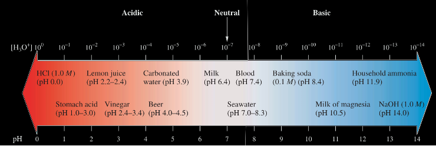

For a strong acid, which ionizes completely in solution, the concentrations of ions are determined by the stoichiometry of the reaction from the initial concentration of acid. However, for a weak acid such as acetic acid, the concentrations of ions in solution are determined from the acid-ionization constant (also called the acid-dissociation constant), which is the equilibrium constant for the ionization of a weak acid.
\(K_{a}\), the acid-ionization constant, equals the constant [\(\ce{H2O}\)] times \(K_{c}\)
\[K_{a}=\frac{[H_{3}O^{+}][A^{-}]}{[HA]}\]
Polyprotic acids
In the preceding section, we dealt only with acids releasing one \(H_{3}O^{+}\) ion or proton. Some acids, however, have two or more such protons; these acids are called polyprotic acids. For a weak diprotic acid like carbonic acid, \(H_{2}CO_{3}\), there are two simultaneous equilibria to consider.
In general, the second ionization constant, \(K_{a2}\), of a polyprotic acid is much smaller than the first ionization constant, \(K_{a1}\). In the case of a triprotic acid, the third ionization constant, \(K_{a3}\), is much smaller than the second one, \(K_{a2}\).
Base Ionization Equilibria
Equilibria involving weak bases are treated similarly to those for weak acids. Ammonia, for example, ionizes in water as follows:
And thus, the base ionization constant \(K_{b}\) is equal to:
\[K_{b} = \frac{[OH^{-}][HB^{+}]}{[B]}\]
The pH scale
You see that whether an aqueous solution is acidic, neutral, or basic depends on the hydronium-ion concentration. You can quantitatively describe the acidity by giving the hydronium-ion concentration. But because these concentration values may be very small, it is often more convenient to give the acidity in terms of pH, which is defined as the negative of the logarithm of the molar hydronium-ion concentration:
\(pH = -log[H_{3}O^{+}]\) or \(pH = -log[H^{+}]\)

You can find the pH of a solution of known hydroxide-ion concentration by first solving for the hydronium-ion concentration, as shown in Example 15.4 b. However, you can also find the pH simply from the pOH, a measure of hydroxide-ion concentration similar to the pH:
\[pOH = -log[OH^{-}]\]
And so pH + pOH = 14
Calculations using \(K_a\) and \(K_b\)
Strong acid-base
Weak acid-base
We use the stoichiometry of the reaction
\[\ce{H2SO4 → 2H^+ + SO4^{2-}}\]
So let’s say that we have a solution of H2SO4 2M and we need to find the pH.
Nicotinic acid (niacin) is a monoprotic acid with the formula \(\ce{HC6H4NO2}\). A solution that is 0.012 M in nicotinic acid has a pH of 3.39 at 25C. What is the acid-ionization constant, \(\text{K}_\text{a}\), for this acid at 25C? What is the degree of ionization of nicotinic acid in this solution?
The degree of ionization equals the amount per liter of nicotinic acid that ionizes (x 0.0012) divided by the total amount per liter of nicotinic acid initially present (0.10). Thus, the degree of ionization is \(\frac{0.0012}{0.10} = 0.012\)
Quinine is an alkaloid, or naturally occurring base, used to treat malaria. A 0.0015 M solution of quinine has a pH of 9.84. The basicity of alkaloids is due to a nitrogen atom that picks up protons from water in the same manner as ammonia does. What is \(\text{K}_\text{b}\)?
Solution:-
Same as the problem 1 just use the formula :
\([OH^-] = \sqrt{K_b \cdot C_\beta}\)
A sample of orange juice has a hydronium-ion concentration of \(2.9 \times 10^{-4}\) M. What is the pH? Is the solution acidic?